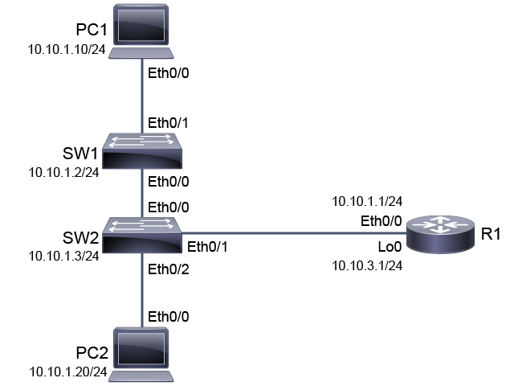

Introduction
Introduction
This activity will guide you through the various aspects of securing administrative access to Cisco IOS devices. You will secure the access to the privileged EXEC mode and see the difference between enable password and enable secret. You will also secure access to the console port. You will enable remote access to the vty lines via Telnet and SSH. You will set SSH as the only acceptable remote access protocol.
The devices are configured as represented in the topology diagram, including their Internet Protocol (IP) version 4 (IPv4) addresses. This activity will focus on R1. You will use other devices as sources of remote access connections.
© 2020 Cisco Systems, Inc.
Job AidsJob Aids
Device Information
Note
In the virtual lab environment, all interfaces are Ethernet interfaces and not FastEthernet or GigabitEthernet interfaces, which you are likely to encounter in networks today. Personal computers (PCs) in the virtual lab environment are simulated by routers, so you should use Cisco IOS commands to configure them or verify the configuration.
Device Information Table| Device | Characteristic | Value |
|---|
| PC1 | IPv4 address | 10.10.1.10/24 |
| PC1 | Default gateway | 10.10.1.1 |
| PC2 | IPv4 address | 10.10.1.20/24 |
| PC2 | Default gateway | 10.10.1.1 |
| SW1 | VLAN 1 IPv4 address | 10.10.1.2/24 |
| SW1 | Default gateway | 10.10.1.1 |
| SW1 | Ethernet0/0 description | Link to SW2 |
| SW1 | Ethernet0/1 description | Link to PC1 |
| SW2 | VLAN 1 IPv4 address | 10.10.1.3/24 |
| SW2 | Default gateway | 10.10.1.1 |
| SW2 | Ethernet0/0 description | Link to SW1 |
| SW2 | Ethernet0/1 description | Link to R1 |
| SW2 | Ethernet0/2 description | Link to PC2 |
| R1 | Ethernet0/0 description | Link to SW2 |
| R1 | Ethernet0/0 IPv4 address | 10.10.1.1/24 |
| R1 | Loopback 0 IPv4 | 10.10.3.1/24 |
© 2020 Cisco Systems, Inc.
ProcedureDiscovery 34: Secure Console and Remote Access
Task 1: Secure Access to Privileged EXEC Mode
Activity
Step 1: On R1, access the privileged EXEC mode with the enable command and the global configuration mode with the configure terminal command.
On R1, enter the following commands:
R1> enable
R1# configure terminal
Enter configuration commands, one per line. End with CNTL/Z.
R1(config)#
Step 2: Set the enable password to Password123, and leave the configuration mode.
On R1, enter the following commands:
R1(config)# enable password Password123
R1(config)# end
R1#
Step 3: The enable password will now protect access to the privileged EXEC mode. Verify this fact by leaving the privileged EXEC with the disable command, then use enable again, and authenticate with the Password123 password.
On R1, enter the following commands:
R1# disable
R1> enable
Password: Password123
R1#
Step 4: View the enable password in the running configuration.
On R1, enter the following command:
R1# show running-config | include enable
enable password Password123
By default, the enable password is stored in the configuration as cleartext.
Step 5: Configure the enable secret, set it to Secret123.
On R1, enter the following commands:
R1# configure terminal
Enter configuration commands, one per line. End with CNTL/Z.
R1(config)# enable secret Secret123
R1(config)# end
R1#
Step 6: When both are present, the enable secret takes precedence over the enable password. Verify that this fact is correct.
On R1, enter the following commands to first try the enable password (which won’t work) and then try the enable secret (which will work):
R1# disable
R1> enable
Password: Password123
Password: Secret123
R1#
The enable password was not accepted to access privileged EXEC mode. The enable secret was required.
Step 7: View enable password and enable secret in the configuration.
On R1, enter the following command:
R1# show running-config | include enable
enable secret 4 9h/bNbZRK8Hm9J2ONmwUdf0KoztPJewuR2NseOBKzM6
enable password Password123
The enable secret is always stored in a protected fashion in the configuration file. Cisco IOS Software on routers supports several encryption types. On production routers, you will most likely find encryption type 8 or type 9. Using encryption type 4 is not recommended due to security risks.
Step 8: Enable the service password-encryption command in the configuration mode. Then revisit how the enable credentials appear in the running configuration.
On R1, enter the following commands:
R1# configure terminal
Enter configuration commands, one per line. End with CNTL/Z.
R1(config)# service password-encryption
R1(config)# end
R1# show running-config | include enable
enable secret 4 9h/bNbZRK8Hm9J2ONmwUdf0KoztPJewuR2NseOBKzM6
enable password 7 03345A1815182E5E4A584B56
The enable password is now protected using the Cisco IOS type-7 encryption algorithm, which is used by default. The service password-encryption will also protect other cleartext passwords that may appear in the configuration file.
Task 2: Secure Console and Remote Access
Activity
Step 1: Enable a password on the R1 console (line console 0) by using the login command with the password command. Set the password to Console123.
On R1, enter the following commands:
R1# configure terminal
Enter configuration commands, one per line. End with CNTL/Z.
R1(config)# line console 0
R1(config-line)# login
% Login disabled on line 0, until 'password' is set
R1(config-line)# password Console123
R1(config-line)# end
R1#
Step 2: View the configuration that is now in place on "line con 0."
On R1, enter the following command:
R1# show running-config | section line
line con 0
password 7 080243401A16091243595F
logging synchronous
login
line aux 0
line vty 0 4
login
transport input all
Service password-encryption continues to encrypt new passwords as they are defined.
Step 3: Verify the console password by logging out completely from the Cisco IOS CLI session on R1 and then logging back in. Continue by using the enable command to access the privileged EXEC mode.
On R1, enter the following commands:
R1# logout
R1 con0 is now available
Press RETURN to get started.
<Enter>
User Access Verification
Password: Console123
R1> enable
Password: Secret123
R1#
Step 4: In a similar fashion, add a password to the five vty lines (line vty 0 4), setting the credential that is required for remote access to the CLI of R1 to VTYPass.
On R1, enter the following commands:
R1# configure terminal
Enter configuration commands, one per line. End with CNTL/Z.
R1(config)# line vty 0 4
R1(config-line)# login
% Login disabled on line 2, until 'password' is set
% Login disabled on line 3, until 'password' is set
% Login disabled on line 4, until 'password' is set
% Login disabled on line 5, until 'password' is set
% Login disabled on line 6, until 'password' is set
R1(config-line)# password VTYPass
R1(config-line)# end
R1#
Step 5: Verify that you can access the CLI of R1 via Telnet from other systems. Access the PC1 console and then access 10.10.1.1 via Telnet.
On PC1, enter the following commands:
PC1> telnet 10.10.1.1
Trying 10.10.1.1 ... Open
User Access Verification
Password: VTYPass
R1>
The prompt changed from PC1 to R1. You are currently accessing the PC1 console but using PC1 to remotely access the CLI of R1.
Step 6: Verify that you can use this remote connection to access the R1 privileged EXEC with the enable command and the Secret123 enable secret.
On the PC1 console (that is connected to R1), enter the following commands:
R1> enable
Password: Secret123
Step 7: Close the remote access connection using either the logout or exit command.
On the PC1 console while connected via Telnet to R1, enter the following commands:
R1# logout
[Connection to 10.10.1.1 closed by foreign host]
PC1>
From the user or privileged EXEC, you can use the logout and exit commands interchangeably to terminate remote access connections.
Step 8: Return to the R1 console. You will now increase the sophistication of the login process. Instead of using simply a password for remote access, you will require a username and a password. The first step is to define a username in the configuration. Enter the configuration mode and then use ? to display the options that are available as you configure a username.
On R1, enter the following commands:
R1# configure terminal
Enter configuration commands, one per line. End with CNTL/Z.
R1(config)# username ?
WORD User name
The next element of the command line is to specify the username as a freeform WORD.
Step 9: Continue by specifying admin as the username followed by the ? to display the next set of options.
On R1, enter the following command:
R1(config)# username admin ?
aaa AAA directive
access-class Restrict access by access-class
autocommand Automatically issue a command after the user logs in
callback-dialstring Callback dialstring
callback-line Associate a specific line with this callback
callback-rotary Associate a rotary group with this callback
dnis Do not require password when obtained via DNIS
nocallback-verify Do not require authentication after callback
noescape Prevent the user from using an escape character
nohangup Do not disconnect after an automatic command
nopassword No password is required for the user to log in
one-time Specify that the username/password is valid for only one
time
password Specify the password for the user
privilege Set user privilege level
secret Specify the secret for the user
user-maxlinks Limit the user's number of inbound links
view Set view name
<cr>
There are several options available, but for this purpose, focus only on password and secret. Understand that the differences regarding the username command are the same as they are with the enable password and enable secret commands.
Step 10: Continue by specifying secret as the credential storage option and use the ? to display the next set of options.
On R1, enter the following command:
R1(config)# username admin secret ?
0 Specifies an UNENCRYPTED secret will follow
4 Specifies a SHA256 ENCRYPTED secret will follow
5 Specifies a MD5 ENCRYPTED secret will follow
LINE The UNENCRYPTED (cleartext) user secret
You can specify a 4 followed by the SHA-256-protected secret or a 5 followed by an MD5-protected secret. These options allow you to copy the protected secret from one configuration to another. There is also the option to specify a 0 followed by the cleartext secret. Specifying the 0 is optional and generally not used. In this case, you do not have a protected secret to work with. You will simply enter the cleartext secret next.
Step 11: Complete the definition of the username admin with the Cisco123 secret.
On R1, enter the following command:
R1(config)# username admin secret Cisco123
Step 12: Remain in configuration mode. Use the do command to execute the privileged EXEC show running-config command from within configuration mode. Send the output through the include filter specifying the user string.
On R1, enter the following command:
R1(config)# do show running-config | include user
username admin secret 4 vwcGVdcUZcRMCyxaH2U9Y/PTujsnQWPSbt.LFG8lhTw
The username admin is now defined, and its password is stored in the configuration as a Cisco IOS type 4, SHA-256-protected secret.
Step 13: Currently, the vty lines have the login command set without an argument. In this state, authentication is done using the password that is defined on the line itself. If the login command is enhanced with the local argument, then authentication will be accomplished using usernames that are stored in the local running configuration. Enter the vty line configuration mode and configure the login local command. Remove the previously configured password, using the no password command, then leave the configuration mode.
On R1, enter the following commands:
R1(config)# line vty 0 4
R1(config-line)# login local
R1(config-line)# no password
R1(config-line)# end
R1#
Step 14: Remote access authentication should now require a valid username and password. Access the PC1 console and connect via Telnet to R1 (10.10.1.1) to verify this fact.
On PC1, enter the following commands:
PC1> telnet 10.10.1.1
Trying 10.10.1.1 ... Open
User Access Verification
Username: admin
Password: Cisco123
R1>
Step 15: Close the remote access connection using either the logout or exit command.
On the PC1 console while connected via Telnet to R1, enter the following commands:
R1# logout
[Connection to 10.10.1.1 closed by foreign host]
PC1>
From the user or privileged EXEC, you can use the logout and exit commands interchangeably to terminate remote access connections.
Task 3: Enable SSH
Activity
Step 1: On R1, enable SSH. The prerequisite of SSH on Cisco IOS vty lines is having an RSA public-private key pair. The prerequisite to defining the key pair is to have a hostname and a domain name that are defined. R1 already has a hostname that is configured. Configure ccna.lab as the domain name, then generate a 2048-bit RSA public-private key pair.
On R1, enter the following commands:
R1# configure terminal
Enter configuration commands, one per line. End with CNTL/Z.
R1(config)# ip domain-name ccna.lab
R1(config)# crypto key generate rsa
The name for the keys will be: R1.ccna.lab
Choose the size of the key modulus in the range of 360 to 4096 for your
General Purpose Keys. Choosing a key modulus greater than 512 may take
a few minutes.
How many bits in the modulus [512]: 2048
% Generating 2048 bit RSA keys, keys will be non-exportable...
[OK] (elapsed time was 0 seconds)
R1(config)#
*Apr 15 12:43:54.804: %SSH-5-ENABLED: SSH 1.99 has been enabled
Shortly after you generate the RSA key pair, SSH is automatically enabled on the router.
Note
RSA is one of the most common asymmetric algorithms with variable key length, usually from 1024 to 4096 bits. Smaller keys require less computational overhead to use, large keys provide stronger security. The RSA algorithm is based on the fact that each entity has two keys, a public key and a private key. The public key can be published and given away, but the private key must be kept secret and one cannot be determined from the other. What one of the keys encrypts, the other key decrypts, and vice versa. SSH uses the RSA algorithm to securely exchange the symmetric keys used during the session for the bulk data encryption in real time.
Step 2: Some security issues are associated with SSHv1. Limit the options to SSHv2 only, then leave the configuration mode.
On R1, enter the following commands:
R1(config)# ip ssh version 2
R1(config)# end
R1#
Step 3: Both Telnet and SSH should now be options for remote access to R1. Access the PC1 console to verify this fact. First, connect via Telnet from PC1 to R1. Disconnect once you have connected.
On PC1, enter the following command:
PC1> telnet 10.10.1.1
Trying 10.10.1.1 ... Open
User Access Verification
Username: admin
Password: Cisco123
R1> exit
[Connection to 10.10.1.1 closed by foreign host]
PC1>
Step 4: Next, test an SSH connection from PC1 to R1, using the ssh -l username address command.
On PC1, enter the following command:
PC1> ssh -l admin 10.10.1.1
Password: Cisco123
R1>
The "–l" is a hyphen with a lower-case "L" letter, not a hyphen with the number 1. Think lower-case "L" for "login."
Step 5: From this remote access connection, examine the vty configuration to understand why both Telnet and SSH are allowed. It is because "transport input all" is specified on the "line vty 0 4" configuration.
On the PC1 console (that is connected to R1), enter the following command:
R1> enable
Password: Secret123
R1# show running-config | section line
line con 0
password 7 080243401A16091243595F
logging synchronous
login
line aux 0
line vty 0 4
password 7 0125323D6B0A151C
login local
transport input all
Step 6: Because SSH is superior to Telnet from a security perspective, change the transport input option from all to ssh under "line vty 0 4."
On R1, enter the following commands:
R1# configure terminal
Enter configuration commands, one per line. End with CNTL/Z.
R1(config)# line vty 0 4
R1(config-line)# transport input ssh
R1(config-line)# end
Step 7: Terminate this SSH session to return to the local console of PC1.
On R1, enter the following command:
R1# logout
[Connection to 10.10.1.1 closed by foreign host]
PC1>
Step 8: Attempt a Telnet session from PC1 to R1. Because the transport input is now set to SSH only, the Telnet attempt should be rejected.
On PC1, enter the following command:
PC1> telnet 10.10.1.1
Trying 10.10.1.1 ...
% Connection refused by remote host
Step 9: Verify that SSH is still valid for new remote access sessions. Try to connect with SSH one more time from PC1 to R1. Terminate the session after it successfully initiates.
On PC1, enter the following command:
PC1> ssh -l admin 10.10.1.1
Password: Cisco123
R1> logout
[Connection to 10.10.1.1 closed by foreign host]
PC1>
You have explored many options for securing administrative access on Cisco IOS devices during this activity. You used the enable password and the enable secret password to protect the privileged EXEC. You used service password encryption to provide simple protection to cleartext passwords. You implemented a simple password protection on the console and vty lines. You then went further with the vty lines, requiring a username and password for access and configuring SSH. Feel free to continue exploring these concepts independently within the lab environment.
© 2020 Cisco Systems, Inc.